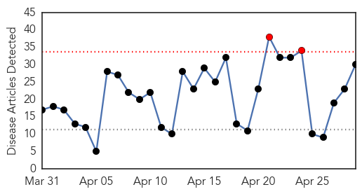
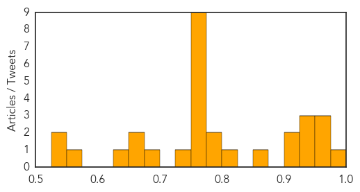
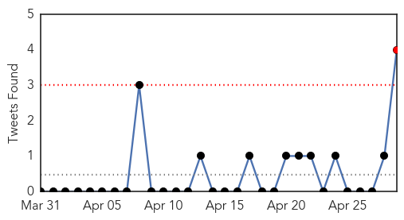

Influenza
30-Day Web Trend
2 alerts, 0 warnings

30-Day Twitter Trend
1 alerts, 0 warnings

Article Locations

Article Confidences
Top Articles:
- 0.977
- OUR VIEW: Make extra effort to avoid spreading flu next year
- 0.967
- Pet Owner Says Her Dogs Contracted Canine Flu From Animal
- 0.959
- Poultry imports from Burkina Faso banned
- 0.951
- Poultry in Midwest Infected with Bird Flu, Illinois Prepares
- 0.948
- La. poultry producers keep wary eye on bird flu
- 0.943
- Agriculture department monitoring spread of avian influenza
- 0.934
- Bird flu leapfrogged, Northwest to Midwest
- 0.925
- USDA developing H5 vaccine
- 0.916
- Flu Scan for Apr 29, 2015
- 0.870
- Vaccination – the best way to fight disease
- 0.810
- Benefits of immunisation outweigh risks –Specialist
- 0.794
- U.S. Bird Flu Outbreak Spreads to Millions of Iowa Egg Hens
- 0.779
- Groups ask for full lab funding during bird flu crisis
- 0.758
- Gov. Dayton carves up bird to show turkey is still safe to eat amid avian flu outbreak
- 0.751
- April 29, 2015 Archives
- 0.751
- April 29, 2015 Archives
- 0.751
- April 28, 2015 Archives
- 0.751
- April 28, 2015 Archives
- 0.751
- April 28, 2015 Archives
- 0.751
- April 28, 2015 Archives
- 0.751
- April 28, 2015 Archives
- 0.751
- April 28, 2015 Archives
- 0.745
- WTNH Connecticut News
- 0.695
- Bird flu ebbing in Minnesota as Iowa cases rise
- 0.659
- Bird flu ebbs in Minnesota as Iowa cases rise
- 0.655
- NEPAL Nepal earthquake: apostolic vicar calls on everyone to help in this time of crisis
- 0.638
- Avian flu strikes 2 more Stearns County farms
- 0.572
- Bird flu alert: Agric Ministry bans poultry products from Burkina Faso
- 0.532
- Tracing the bird flu outbreak in U.S. poultry flocks
- 0.527
- Dog Flu Update: Join Free Google Hangout
Top Tweets:
-
No tweets found for Apr 29, 2015
Unknown
30-Day Web Trend
0 alerts, 0 warnings

30-Day Twitter Trend
1 alerts, 0 warnings

Article Locations

Article Confidences

Top Articles:
- 0.965
- Rare, Contagious Disease Kills 1 Child, Infects Others In Durban With No Vaccines On Hand
- 0.960
- Al-Monitor: the Pulse of the Middle East
- 0.950
- Venezuela sees 67% increase in malaria, nearly 25% are falciparum malaria
- 0.917
- Chicago Tribune
- 0.917
- Chicago Tribune
- 0.917
- Chicago Tribune
- 0.917
- Chicago Tribune
- 0.917
- Chicago Tribune
- 0.917
- Chicago Tribune
- 0.917
- Chicago Tribune
- 0.917
- Chicago Tribune
- 0.917
- Chicago Tribune
- 0.917
- Chicago Tribune
- 0.917
- Chicago Tribune
- 0.917
- Chicago Tribune
- 0.917
- Chicago Tribune
- 0.917
- Chicago Tribune
- 0.917
- Chicago Tribune
- 0.917
- Chicago Tribune
- 0.917
- Chicago Tribune
- 0.917
- Chicago Tribune
- 0.917
- Chicago Tribune
- 0.917
- Chicago Tribune
- 0.917
- Chicago Tribune
- 0.917
- Chicago Tribune
- 0.917
- Chicago Tribune
- 0.911
- Yemen news agency
- 0.910
- The world windows to Thailand
- 0.899
- The Blood-Sucking 'Kissing Bug' Is Set To Invade Britain, Warn Health Experts
- 0.879
- Deadly disease alert for Durban - KwaZulu-Natal
- 0.877
- Potato Salad Responsible for Botulism Outbreak
- 0.877
- ‘Elephant skin’ outbreak in Ohangwena
- 0.842
- CVS Health Announces New Clinical Affiliations with Leading Health Care Organizations in Louisiana and Mississippi
- 0.827
- Certain STD Cases Increase in Flathead County
- 0.826
- Potato salad to blame for botulism
- 0.816
- Humanitarian crisis in the Central African Republic lack of funding threatens the free-access to healthcare
- 0.813
- Positive TB Test Results ‘Very Small’ At Metro State « CBS Denver
- 0.811
- Pence And Health Officials Meet To Discuse HIV Outbreak
- 0.809
- Dogs owners urged to be aware of deadly disease
- 0.789
- dr.dk/Nyheder/Andre_sprog/English
- 0.760
- World Immunization Week Aims to “Close the Immunization Gap” and Provide “a Gift for Life” in Africa
- 0.752
- Immunization Week Raises Vaccination & HPV Awareness
- 0.751
- World's first malaria vaccine could be rolled out by end of year
- 0.748
- International bodies intensify rescue operations
- 0.747
- International bodies intensify rescue operations
- 0.706
- UN allocates $15 million emergency funds for Nepal earthquake relief
- 0.703
- MERS cases on decline
- 0.696
- UN humanitarian chief to visit quake-hit Nepal
- 0.685
- CVS Health expands health partnerships into Louisiana and Mississippi
- 0.677
- HealthPartners Parkinson’s Center: Enhancing Outcomes With a Full Complement of Medical and Neurosurgical Care
Showing top 50 articles...
Top Tweets:
- 0.908
- RT: FLU SCAN: H5N2 in Minnesota, risk over dog flu virus http://t.co/vzK6oFwCfF
- 0.723
- RT: El Día de las madres lo vamos a celebrar en el Hotel Riviera del Sol! en el paraíso caribeño de Antioquia Arboletes htt…
- 0.688
- Campañas masivas de vacunación de y socios han sido clave para la eliminación de la rubéola en la región de las Américas Vacúnate
- 0.597
- Besides providing emergency care in remote areas, some medical teams are prep to deliver public health support, incl disease surveillance
- 0.547
- RT: En los títulos, solamente se escribe con mayúscula inicial la primera palabra. Ej. «Cien años de soledad», «Lo imposible» y…
- 0.536
- Excelente noticia: la región de las Américas declarada libre de transmisión endémica de rubéola y síndrome congénito de la rubéola
- 0.520
- RT: Feeling low with the flu my tweeps? Enter your symptoms into the flu tracker! Science will cure all your ills! http://t.co…